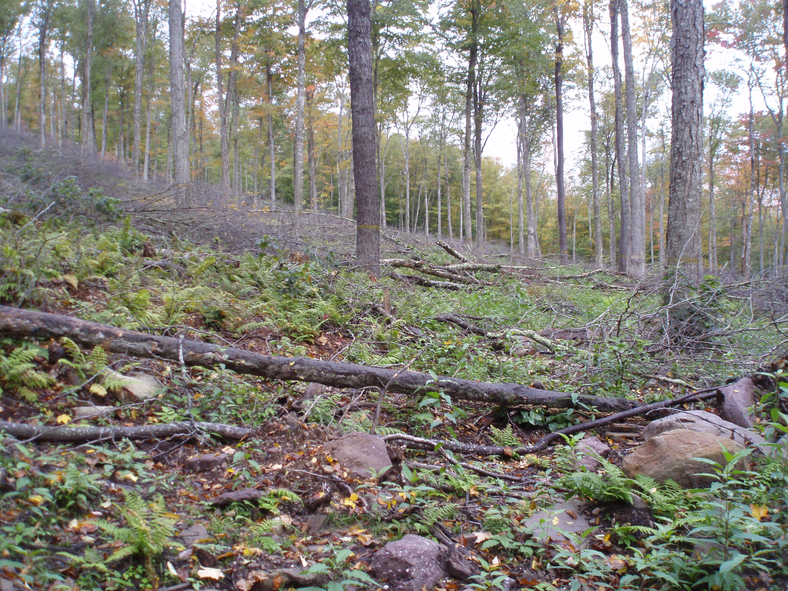
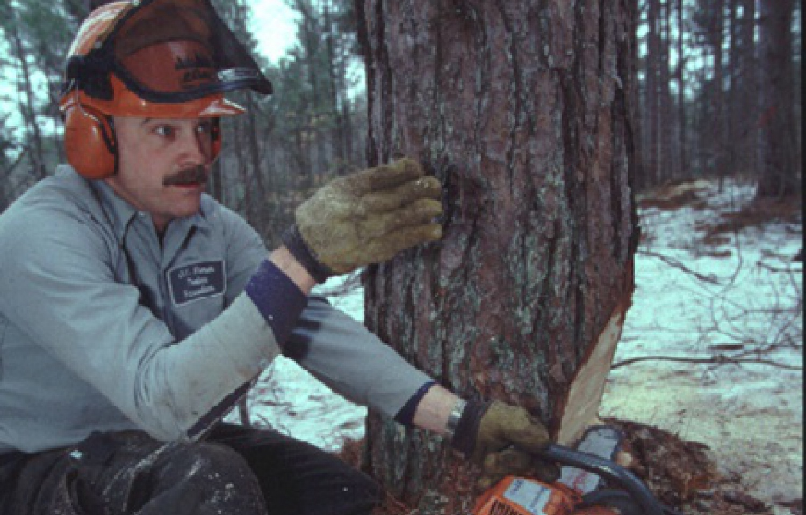

SUSTAINABLE FORESTRY IN PENNSYLVANIA
Sustainably managed forests make a vital contribution to society by providing economic, environmental and social benefits indispensable to the quality of life. A commitment to sustainable forest management means protecting water quality, soil, wildlife and unique resources; promoting human health and safety; and communicating the benefits of the practice of sustainable forestry.
The SFI program is based on the premise that responsible environmental behavior and sound economic decisions can coexist to the benefit of communities, landowners, manufacturers, shareholders, customers and the environment, today and for future generations.
Certified SFI Program Participants believe forest landowners have an important stewardship responsibility and a commitment to society, and they recognize the importance of maintaining viable commercial, family forest, and conservation forest land bases. They support sustainable forestry practices on forestland they manage, and promote it on other lands. They support efforts to protect private property rights, and to help all private landowners manage their forestland sustainably.
To practice sustainable forestry to meet the needs of the present without compromising the ability of future generations to meet their own needs means practicing a land stewardship ethic that integrates reforestation and the managing, growing, nurturing and harvesting of trees for useful products and ecosystem services such as the conservation of soil, air and water quality, carbon, biological diversity, wildlife and aquatic habitats, recreation, and aesthetics.
Private non-industrial forest landowners have a critical role in maintaining the sustainability of Pennsylvania's forests, as they comprise 70% of the total forest land ownership base. Private landowners have the ultimate responsiblity for what happens on their land; however, they must also understand that the effects of their activities can extend beyond their property boundaries. Forest landowners should work with natural resource professionals and follow Pennsylvania's forest management guidelines when planning and implementing land-management activities.
Forest landowners should also consider getting involved with their local Woodland Owners Association. Membership offers a great opportunity to meet and interact with other local forest landowners and many organizations provide excellent resources and educational opportunities for learning more about sustainable forest management. Although each group is independent, and missions and membership policies differ, most use meetings, field demonstrations, tours, seminars and newsletters to provide information about forests and sound forest management to their members and people in the local communities. If learning more about the stewardship of Pennsylvania’s forest resources interests you, consider joining one of the local organizations. If there is no group in your area, consider starting one.
 
Sustainable forestry is a process. Think of it as the development and execution of a plan integrating all the principals, practices, and techniques necessary to properly care for the forest. Properly managing a forest ensures that it remains healthy and vigorous and provides the products and amenities that the landowner desires - and it all starts with a plan.
Most people plan for the important things in life, such as choosing a career, buying a house, taking a trip, and retiring. Their plans consist of written and unwritten objectives, some of which are more specific than others. Planning helps people to focus their ideas so they can reach their goals sooner than they would without planning. As such, forest landowners should have a written plan that organizes what they value about their forest into a comprehensive strategy for maintaining or improving those values – a Forest Management Plan.
A written forest management plan is a road map to responsible forestry. It is a guide that tells landowners what their resources are, what condition they are in, and what can be done to help maintain or improve what they value about their forest. It considers short- and long-term objectives; analyzes the capabilities, limitations, and unique features of the land, looks at how their land fits into the surrounding landscape, and evaluates a wide range of the environmental and financial benefits and consequences of various activities. It has been proven that properly managed land can grow twice as much timber. At the same time, a good plan will enhance other forest values, such as wildlife habitat, recreation, and aesthetic values.
Planning is not a single event, but a series of continuous steps leading to a desired goal. A plan can be as detailed (short-term recommendations) or as general (long-term recommendations) as a landowner desires. The first step is to identify what you value about your forests, assess your forest's condition, and identify the management activities that will help maintain or improve those values. A forester or other forest resource professional can help in developing a management plan.